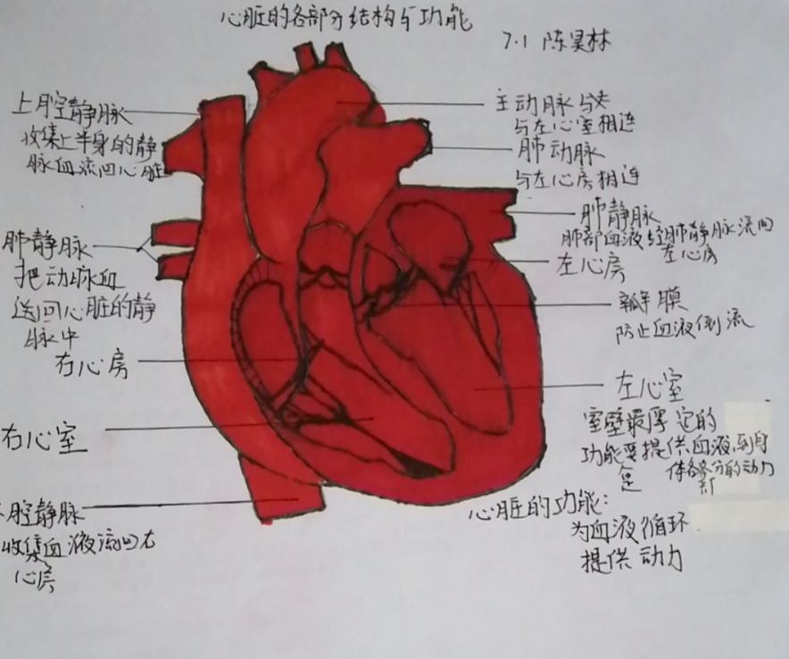
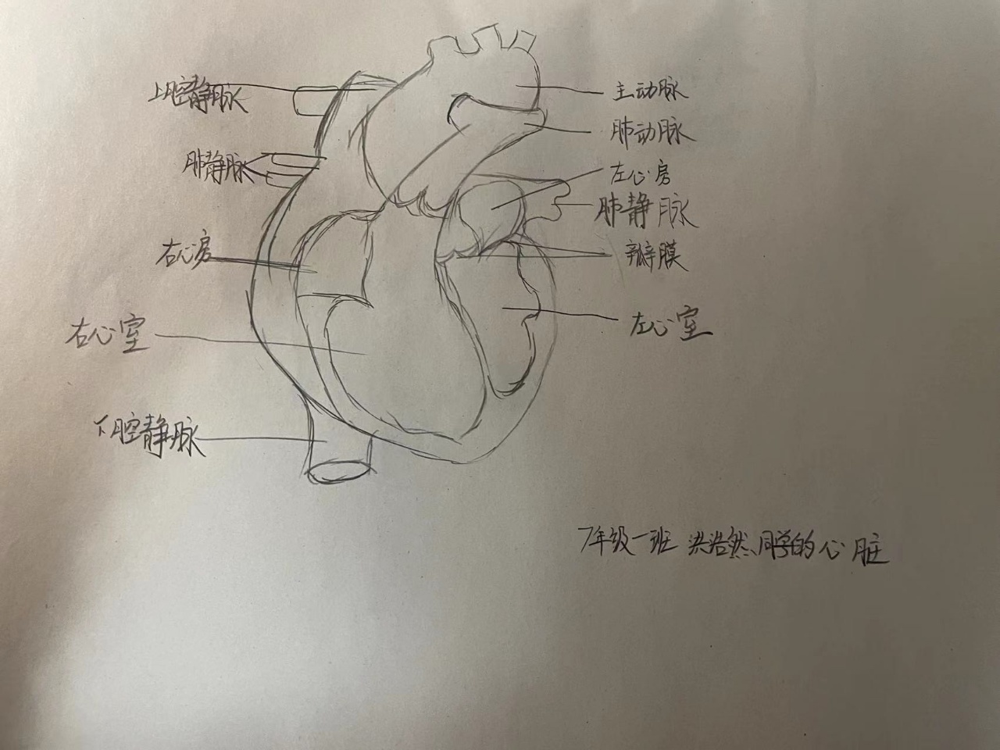

第一部分:
参与成员:辛若贵
心血管疾病的常见病因有遗传因素，如肥厚型心肌病、马凡氏综合症等。长期血脂异常，特别是低密度脂蛋白胆固醇长期高，可以引起动脉硬化，导致心血管疾病发生。高血压长期得不到控制，引起心脏结构功能异常，糖尿病患者长期血糖控制不佳引起糖尿病心肌病或冠心病等。长期不健康饮食、生活习惯也是心血管疾病的常见病因。心脑血管疾病的发生受多种因素影响，主要是机体因素、生活因素、疾病因素、心理社会因素、气象因素综合影响。
老年人预防心脑血管疾病，方法主要包括：
第一、老年人一定要注意低盐饮食，每日摄盐的量不要超过六克，如果盐摄入过多，可能会导致血压升高或者是水钠潴留等，这些容易引起心脑血管疾病。
第二、老年人应该严格也要控制体重，避免摄入一些热量过高的食物或者是甜食，也帮助有效的预防心脑血管疾病，但是在这里要说一句不要过度，有的老年患者甚至肉都不吃了，这样是不可取的。
第三、老年人应该及时要戒烟，因为吸烟的话，可能会加重动脉粥样硬化，从而引起脑血管和冠状血管的静脉狭窄，进一步能导致心脑血管疾病。
第四、也是最重要的一点，心态平衡是所有健康的一个基石。
年轻人预防心血管疾病需要注意以下事项：
1.合理膳食，保持健康的饮食习惯如低盐、低糖饮食，少吃或不吃辛辣刺激性食物，避免暴饮暴食。注意改善日常的饮食结构，多吃粗粮，蔬菜水果，注意补充微量元素。
2.戒烟限酒，吸烟和大量饮酒是心血管疾病的重要危险因素之一。
3.控制体重，定期锻炼身体，增强身体素质。
4.保持良好心态，避免过度紧张、焦虑。
5.保证睡眠时间和睡眠质量，避免长时间熬夜。
6.定期进行检查，及时发现身体上的问题，对于已有疾病应积极治疗。
第二部分:
参与成员:陈昊林

第三部分:
参与成员:张倬旗
第四部分:
参与成员:洪浩然

既然看到这里了不妨看一看洪浩然的个人网站吧